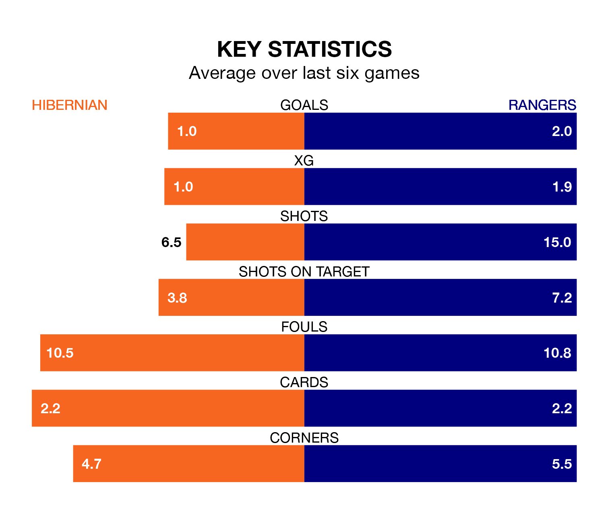

Wednesday's late match between Hibernian and Rangers promises to be one for the neutrals, as two of Premiership's most free-scoring sides go head-to-head.
Ahead of the game at the Easter Road Stadium, Hibs and Rangers sit third and second in the goal-scoring charts, with 26 and 41 goals respectively.
Striker Elie Youan leads the way for the home side, having bagged four goals in their 20 games to date.
And Abdallah Sima and James Tavernier have been the main men in the opponents' penalty box for Rangers, with 10 goals each.
With Jack Butland between the sticks, Rangers can rely on one of the league's safest pair of hands. He has kept 12 clean sheets in his 20 appearances this season, and no 'keeper has prevented the opposition scoring more often in Premiership.
In Hibernian's net, David Marshall has seven clean sheets in 19 games. He has conceded a goal every 72 minutes, more than twice as often as the 164 minutes between goals for Butland.
The away team are second in the table after 20 games, of which they have won 15 and drawn one, earning 46 points.
Hibs are four places behind Rangers in sixth, with six wins and seven draws putting them on 25 points.
The hosts are in mixed form in Premiership, with two wins and a draw from their last six games.
With five wins and one loss over that period, Rangers's form is much better – they have taken 15 points from 18, compared to Hibernian's seven.
In the last five years, Hibernian and Rangers have played each other on 18 occasions. Hibernian won one of them, Rangers 14, and they drew three times.
On average, Hibs scored 0.9 goals and Rangers 2.3 in those matches.
Their last meeting was on October 21, when Rangers won 4-0 at home.
Hibernian's last match was on January 2, a 2-2 draw against Motherwell, with Youan getting the goals for Hibs.
Rangers beat Kilmarnock 3-1 last time out, also on January 2, with Ross McCausland, Sima and Todd Cantwell on the scoresheet.
Updated: 10:50, 10/01/24